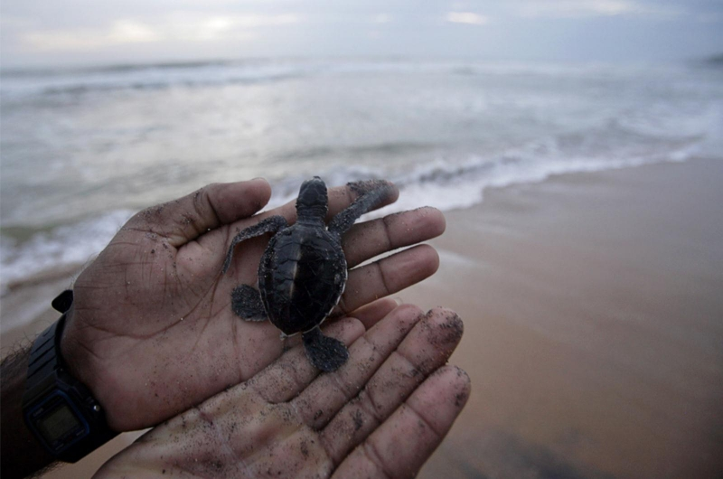
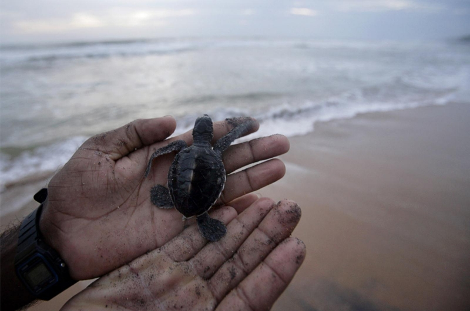

Kosgoda turtle hatchery
Explore a Turtle Hatchery in Kosgoda
The Kosgoda Turtle Hatchery is a well-known conservation project located in the coastal town of Kosgoda, Sri Lanka. It is dedicated to the preservation and protection of sea turtles, as well as raising awareness about their conservation. Sea turtles face numerous threats, such as habitat destruction, pollution, poaching, and accidental capture in fishing gear. The Kosgoda Turtle Hatchery aims to mitigate these risks and contribute to the conservation of sea turtle populations through various initiatives.
One of the primary objectives of the hatchery is to protect sea turtle nests and eggs. Local villagers, along with hatchery staff, actively patrol the nearby beaches to locate and relocate turtle nests to safer areas within the hatchery premises. This helps to prevent predation and disturbances that could harm the eggs or hatchlings.
Once the eggs are relocated, they are carefully monitored until they hatch. Visitors to the hatchery can witness this incredible process and observe baby turtles emerging from their nests. Depending on the time of year, visitors may have the opportunity to participate in releasing the hatchlings into the sea, offering them a better chance of survival.
In addition to conservation efforts, the Kosgoda Turtle Hatchery also plays a crucial role in educating the public, especially tourists, about the importance of sea turtle conservation. They provide informative guided tours, sharing knowledge about the different turtle species found in the area, their life cycles, and the threats they face. These educational programs aim to raise awareness and promote responsible tourism practices that do not harm sea turtles and their habitats.

 
Turtle Species & Life Cycle
- Turtle Species Found in Kosgoda:
The Kosgoda Turtle Hatchery is home to several turtle species, each with its own unique characteristics and conservation needs. Among the commonly found species are the Green Sea Turtle (Chelonia mydas), Hawksbill Turtle (Eretmochelys imbricata), Loggerhead Turtle (Caretta caretta), and Olive Ridley Turtle (Lepidochelys olivacea). These species play a vital role in maintaining the ecological balance of the marine ecosystem. - Nesting Behavior and Life Cycle of Turtles:
Turtles exhibit fascinating nesting behavior and undergo a remarkable life cycle. Female turtles return to the same beaches where they were born to lay their eggs, known as nesting sites. They dig nests in the sand and carefully deposit their eggs before covering them up and returning to the ocean. The eggs are left to incubate in the warm sand for a specific period of time, which varies among turtle species. - Egg Collection and Incubation Process:
At the Kosgoda Turtle Hatchery, dedicated conservationists collect vulnerable turtle eggs from nesting sites to protect them from natural threats and human activities. These collected eggs are carefully handled and relocated to a controlled environment within the hatchery premises. The hatchery ensures optimal incubation conditions, such as temperature and humidity, to increase the chances of successful hatching. - Release Programs and Turtle Conservation:
Once the baby turtles hatch, the Kosgoda Turtle Hatchery implements release programs to reintroduce them into the wild. Hatchlings are carefully monitored to ensure they are strong and healthy before being released into the ocean. This crucial phase enables the hatchlings to embark on their own perilous journey, where survival is heavily dependent on environmental factors and instincts developed over millions of years.
Impact & Future Plans
The Kosgoda Turtle Hatchery has had a significant impact on turtle conservation in the region. Through their volunteer and visitor programs, they have been able to raise awareness about the importance of protecting turtles and their habitats. Visitors from around the world have gained valuable insights into the challenges faced by turtles and have actively participated in the hatchery's efforts.
The hatchery's research and monitoring projects have played a crucial role in understanding the nesting behavior and life cycle of turtles. By collecting data on nesting patterns, egg hatching success rates, and hatchling survival, they have contributed to scientific knowledge and conservation strategies. This research has allowed them to implement effective release programs, ensuring that young turtles have the best chance of survival in the wild.
Collaboration with local communities and organizations has been a key aspect of the hatchery's success. By working together with fishermen, coastal residents, and other stakeholders, they have fostered a sense of ownership and responsibility towards turtle conservation. Community members have been actively involved in protecting nests, reporting turtle sightings, and participating in beach clean-up initiatives.